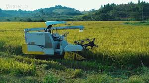
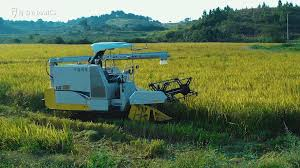

modern technology
Modern technology is simply an advancement of old technology, the impact of technology in modern life is unmeasurable, we use technology in different ways and sometimes the way we implement various technologies ends up harming our lives or the society we leave in.
 see more

see more

Vertical farming is an energy intensive system of crop production involving integration of multiple technologies such as big data analytics, robotics, internet of things, artificial intelligence etc. so that crops can grow well without any agronomic constraint.